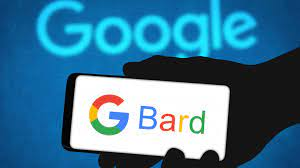

Today we are going to discuss about Chat gpt and google bard

ChatGPT is an AI language model developed by OpenAI, designed
to understand and generate human-like text in natural
language conversations. It leverages deep learning
techniques to comprehend, respond, and generate coherent
and contextually relevant text across various topics and
tasks. Capable of understanding nuances in language,
ChatGPT engages in conversations, assists with queries,
provides information, and simulates human-like
interaction, serving as a versatile tool for diverse
applications in communication, content generation, and
problem-solving.
Advantages of Chat Gpt:-
- Responses: Offers quick and timely
replies,available 24/7 for user queries.
- Scalability:Handles multiple conversations
simultaneously without compromising speed.
- Language Processing: Understands
and generates human-like text in various contexts.
Disadvantages of Chat gpt :-
- Contextual Limitations: May sometimes
misinterpret or lose context in complex or ambiguous
conversations.
- Potential Bias and Inaccuracies:May
generate biased or inaccurate information based on
training data.
- Privacy Concerns:Interactions might
raise privacy issues due to data handling and storage.

Imagine a friendly AI pal from Google, ready to
chat, create, and answer your questions – that's
me, Bard! I'm a wordsmith, spinning stories and
poems, a language whiz, and a curious mind always
eager to learn. Ask me anything, big or small, and
I'll do my best to answer with informative wit and
a touch of creativity. I'm still under development,
but I'm always learning and growing, ready to be
your AI partner in exploring the world's wonders.
Advantages of google bard:-
- Swiss Army Knife:
I write, translate, answer, and create!
- Knowledge Guru:
Ask me anything, I'll dig deep for answers.
- Creative Spark:
Poems, stories, code – let's get imaginative!
Disadvantages of Google Bard:-
- Learning Curve:
Bard is still under development,
meaning mistakes or misunderstandings can occur.
- Data Reflection:
Knowledge reflects the real world, potentially
including biases or inaccuracies.
- Reasoning Mystery:
The inner workings of how Bard arrives at
answers can be unclear.